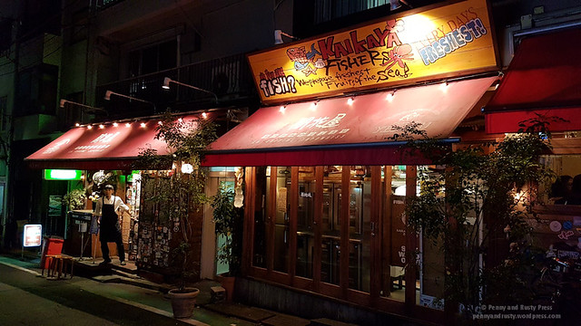
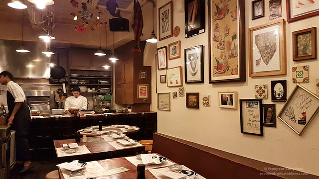
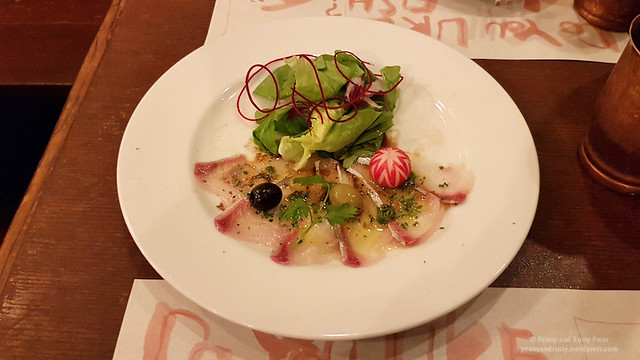
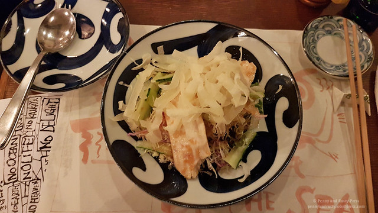
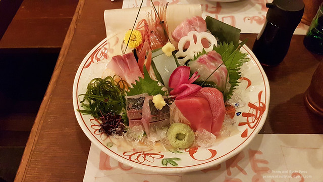
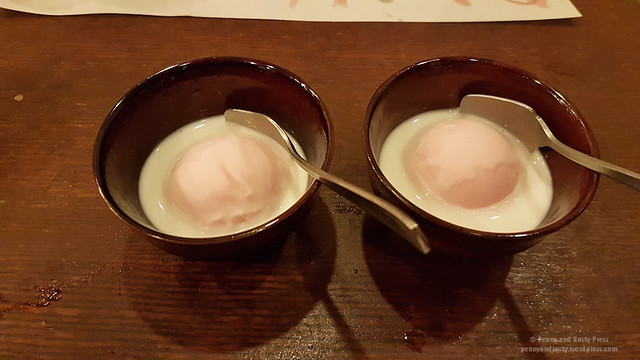

<!DOCTYPE html>
<html lang="en">
<head>
    <meta charset="UTF-8">
    <meta name="viewport" content="width=device-width, initial-scale=1.0">
    <title>My first ever github repo</title>
</head>
<body>
    
</body>
</html><!DOCTYPE html>
<html lang="en">
<head>
    
    <!-- This is the head section -->
    <meta charset="UTF-8">
    <meta name="viewport" content="width=device-width, initial-scale=1.0">
    <title>My Travel Blog</title>
    <link rel="shortcut icon" href="59439.png">
    
</head>
<body>
    <h1> <em>My</em><i> Travel Blog</i></h1>

    <div style="width: 1000px;">
        <h2>Kaikaya By The Sea: Tokyo </h2>
        <br><br>
        <p>One of our best meals during our last visit to Tokyo was at an izakaya (a restaurant that serves up Japanese tapas) located in Shibuya. We heard that this place was popular so we made an effort to show up early for their dinner seating. It’s about a 10 minute walk west of the Hachikō statue but it’s on a small little side street that we probably wouldn’t have even noticed.</p>

        

        <p>Apparently, they take reservations over the phone and it might be a good idea to make reservations if you come here. They separate the restaurant into a non-smoking section on the right and a smoking section on the left (I believe the restaurant used to be smaller and they bought the neighbouring building to expand). Although we arrived right when they opened, they only had seating for us in the unreserved smoking section. We were lucky that there weren’t any diners choosing to smoke near us.</p>

        

        <p>Instead of trying to decide what to order here, we went with one of their set menus which was a good value. The Yuki special menu comes with 8 dishes plus dessert. First up was the Yellowtail Carpaccio, which is thinly sliced hamachi, served beautifully on the plate. The yellowtail had a rice, buttery texture that was contrasted by the tanginess of the basil, garlic, and olive oil dressing.

        </p>

        

        <p>Next up was a Crisp Salad Topped with Grilled Chicken. The grilled chicken pieces were rather large and was accentuated by the crispness of the salad.</p>

        

        <p>The Assorted Sashimi comes with 7 different types of sashimi and was quite fresh. During our visit, we had snapper, lean tuna, mackerel, yellowtail, shrimp, fatty tuna, and squid. While I enjoyed most of the seafood on this plate, I’m not a big fan of squid sashimi (which is odd because I’m good with octopus) – I think it’s the texture of the raw squid that throws me. However, besides my own aversion to the squid sashimi, the rest were quite excellent.
        Their specialty is the House Special Tuna “Spareribs” – these are actually tuna collars which you don’t see much of in Vancouver. The tuna collar runs along the clavicle behind the gills and provides rich meat that’s anchored to the collarbone. You don’t have to worry much about small bones in this dish as the flesh separates nicely and swims in a wickedly tasty sauce.</p>

        

        <p>The large Deep Fried Prawns in Prawn Sauce had a mix of sweet and spiciness to the sauce and was served in a crisp tostada-like bowl.</p>

        

        <p>By this time, we were extremely full but we had room for the Cherry Blossom Gelato which is served in a bowl of cream. The gelato has a very mild taste but is a refreshing way to end the meal.Overall, our meal came out to 8532円 including drinks and it was worth every last yen.
        Tōkyō-to, Shibuya-ku, Maruyamachō, 23-7</p>
        
        <button type="button" name="" id="">Read More</button>

    </div>

    <br>

    <span> <b>What I bought.</b></span>

    

    
    <ol type="1">
        <li>Unagi – Japanese Freshwater Eel.</li>
        <li>Uni – Sea Urchin.</li>
        <li>Shishamo – “Willow Leaf Fish”</li>
        <li>Maguro – Bluefin Tuna.</li>
        <li>Ika & Tako – Squid and Octopus.</li>
        <li>Hotate – Scallops</li>
        <li>Fugu – Pufferfish.</li>
        <li>Ikura – Salmon Roe</li>
    </ol> 

    <span> <b> My favourite food </b> </span>

    <ul type="cricle">
        <li>Fugu – Pufferfish.</li>
        <li>Shishamo – “Willow Leaf Fish”</li>
        <li>Maguro – Bluefin Tuna.</li>
    </ul>

    <a href="https://www.youtube.com/watch?v=57tBWeXu20Q" target="_blank">Watch Eating Seafood</a>

    <br><br>
    
    <br><br><br>


    

</body>
</html>